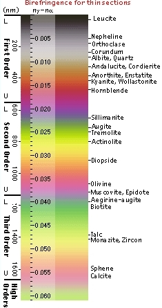

Mineral A is colourless and non-pleochroic. Crystals are subhedral and
do not show cleavage in PPL. It has very low relief. The dusty or
turbid appearance is due to late stage alteration.
Where on the birefringence chart do you think mineral A will fall?
